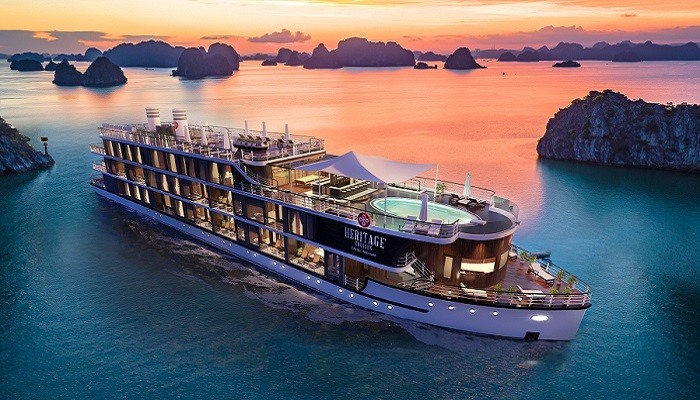
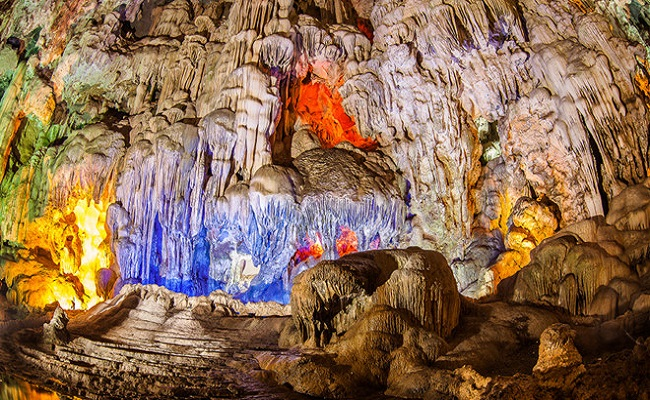
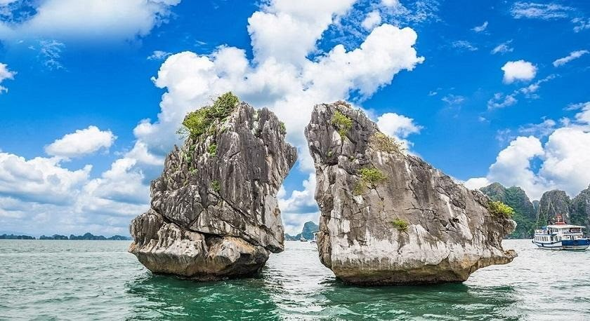
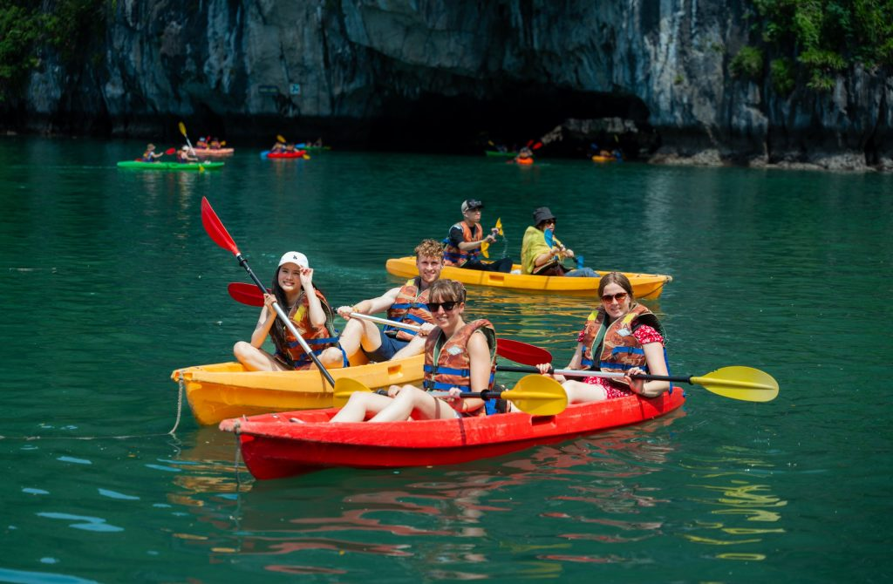
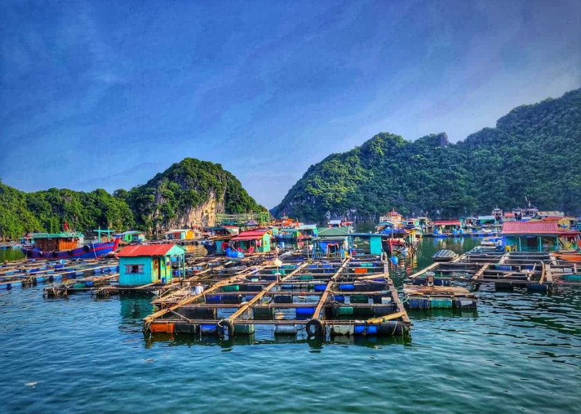
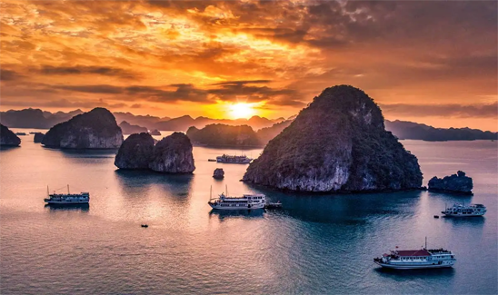
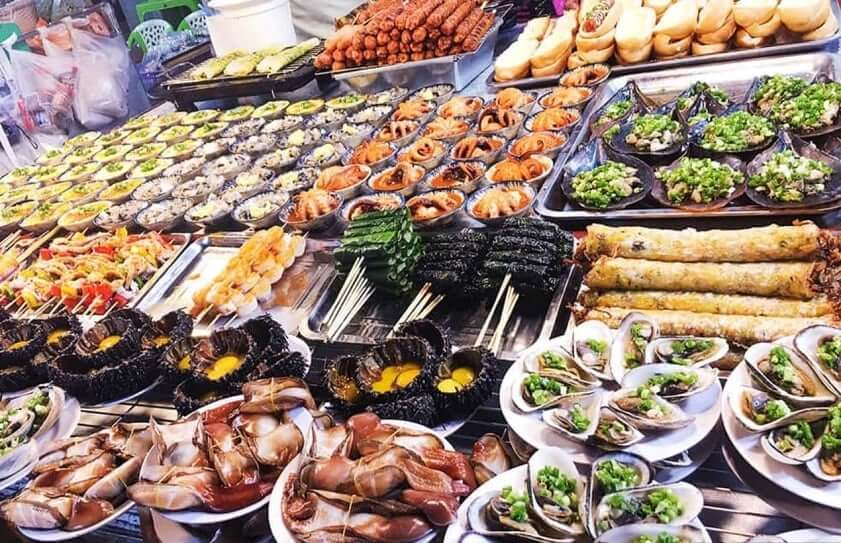
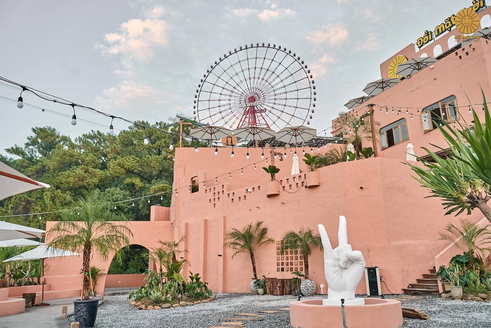

Giới Thiệu Tour
Vịnh Hạ Long là một trong những điểm đến nổi tiếng nhất Việt Nam, gây ấn tượng với hàng nghìn đảo đá vôi lớn nhỏ nổi bật giữa mặt biển xanh.
Tour Vịnh Hạ Long Kỳ Quan 2 ngày 1 đêm đưa du khách trải nghiệm du thuyền, khám phá hang động, chèo kayak, ngắm hoàng hôn và thưởng thức hải sản địa phương.
Điểm Nổi Bật

Du Thuyền Trên Vịnh
Ngắm cảnh biển xanh, đảo đá vôi và không gian kỳ quan từ boong tàu.

Hang Sửng Sốt
Khám phá hang động đá vôi rộng lớn với thạch nhũ tự nhiên kỳ ảo.

Hòn Trống Mái
Biểu tượng nổi bật của Hạ Long, gắn liền với vẻ đẹp lãng mạn của vịnh.

Chèo Kayak
Tự mình len lỏi giữa làn nước xanh và những vách đá hùng vĩ.

Làng Chài Trên Vịnh
Tìm hiểu đời sống ngư dân và nét văn hóa biển đặc trưng của Quảng Ninh.

Hoàng Hôn Trên Vịnh
Khoảnh khắc mặt trời buông xuống giữa biển trời tạo nên khung cảnh rất đáng nhớ.

Ẩm Thực Hải Sản
Thưởng thức bữa ăn trên du thuyền với các món hải sản tươi ngon.

Góc Check-in Biển Đảo
Nhiều góc chụp đẹp với nền biển xanh, núi đá và du thuyền sang trọng.
Lịch Trình Chi Tiết
Ngày 1 — Khởi Hành Đến Hạ Long
06:30 — Khởi hành từ Hà Nội hoặc điểm tập kết đã hẹn.
10:30 — Đến cảng tàu du lịch Hạ Long, làm thủ tục lên du thuyền.
11:30 — Bắt đầu hành trình tham quan vịnh, ngắm các đảo đá nổi tiếng.
12:30 — Dùng bữa trưa trên du thuyền với các món hải sản địa phương.
14:00 — Tham quan hang Sửng Sốt hoặc hang động theo tuyến tham quan.
16:00 — Chèo kayak, chụp ảnh và thư giãn trên boong tàu.
18:00 — Ngắm hoàng hôn, dùng bữa tối và nghỉ đêm trên du thuyền.
Ngày 2 — Bình Minh Trên Vịnh
06:00 — Dậy sớm ngắm bình minh và tận hưởng không khí trong lành.
07:00 — Dùng bữa sáng nhẹ trên du thuyền.
08:00 — Tham quan làng chài hoặc tiếp tục khám phá các điểm đẹp trên vịnh.
10:00 — Làm thủ tục trả phòng, nghỉ ngơi và chụp ảnh trên boong tàu.
11:30 — Dùng bữa trưa trước khi du thuyền quay về cảng.
12:30 — Rời cảng Hạ Long, lên xe trở về điểm đón ban đầu.
16:30 — Về đến điểm hẹn, kết thúc tour và hẹn gặp lại.
Bảng Giá Tour
| Đối Tượng | Giá / Người | Ghi Chú |
|---|---|---|
| Người lớn | 3.200.000 ₫ | Bao gồm xe đưa đón, du thuyền, phòng nghỉ và bữa ăn theo lịch trình. |
| Trẻ em 5–11 tuổi | 2.300.000 ₫ | Có ghế ngồi riêng, ngủ chung phòng với người lớn. |
| Trẻ em dưới 5 tuổi | Miễn phí | Ngồi cùng người lớn, chưa bao gồm chi phí phát sinh riêng. |
| Phụ thu phòng đơn | +650.000 ₫ | Áp dụng khi khách có nhu cầu ở một mình một phòng. |
Giá đã gồm: xe đưa đón, vé tham quan Vịnh Hạ Long, du thuyền 4 sao, phòng nghỉ, các bữa ăn, hướng dẫn viên và bảo hiểm du lịch cơ bản.
Đánh Giá Khách Hàng
4.9 / 5 ★★★★★
156 đánh giá từ khách đã tham gia tour.
Lê Minh Trang
Vịnh Hạ Long ngoài đời đẹp hơn ảnh rất nhiều. Hướng dẫn viên nhiệt tình, các điểm tham quan hợp lý, không bị quá mệt.
Phạm Đức Huy
Trải nghiệm chèo kayak rất thú vị. Phòng trên du thuyền sạch, view đẹp.
Nguyễn Hoàng Nam
Tour rất đẹp, du thuyền sạch sẽ, đồ ăn ngon và lịch trình vừa đủ. Mình thích nhất khoảnh khắc ngắm hoàng hôn trên vịnh.